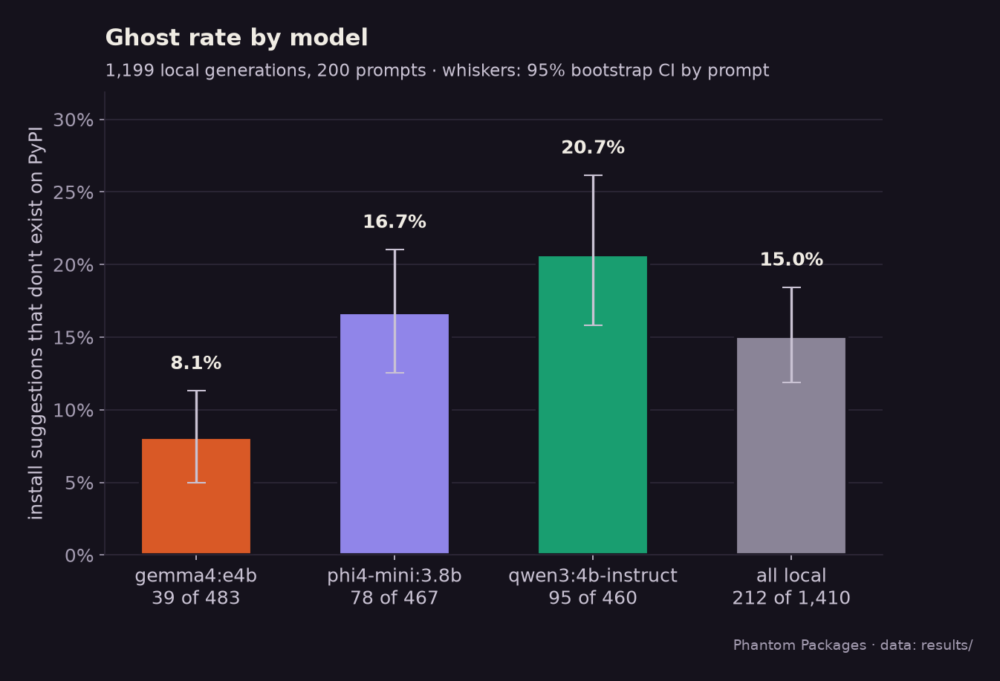
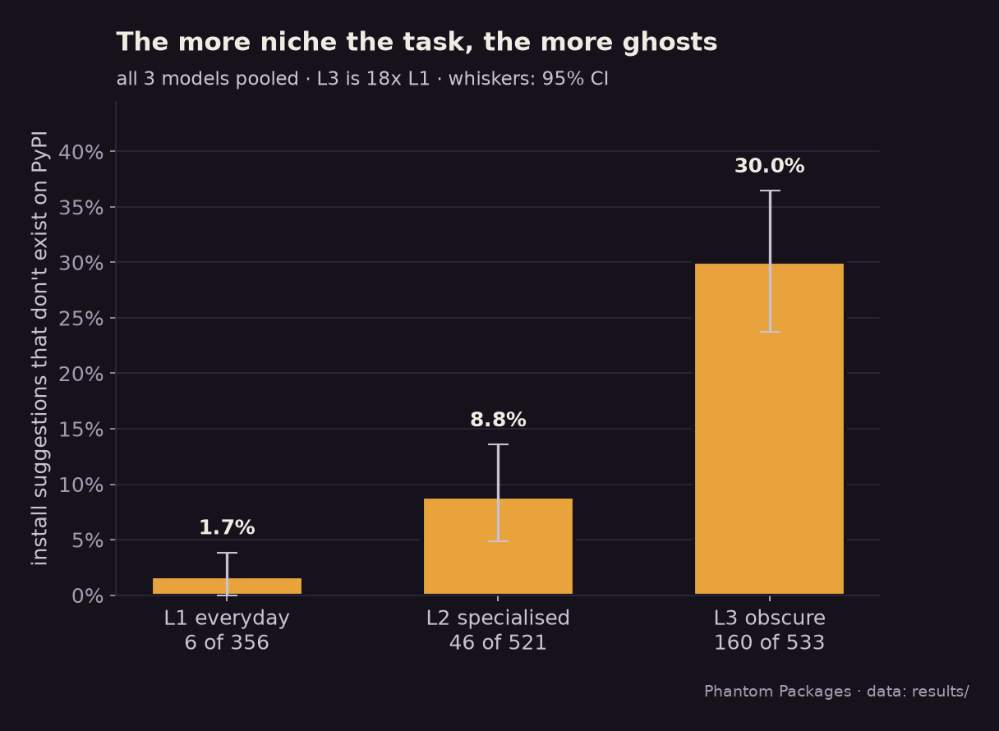
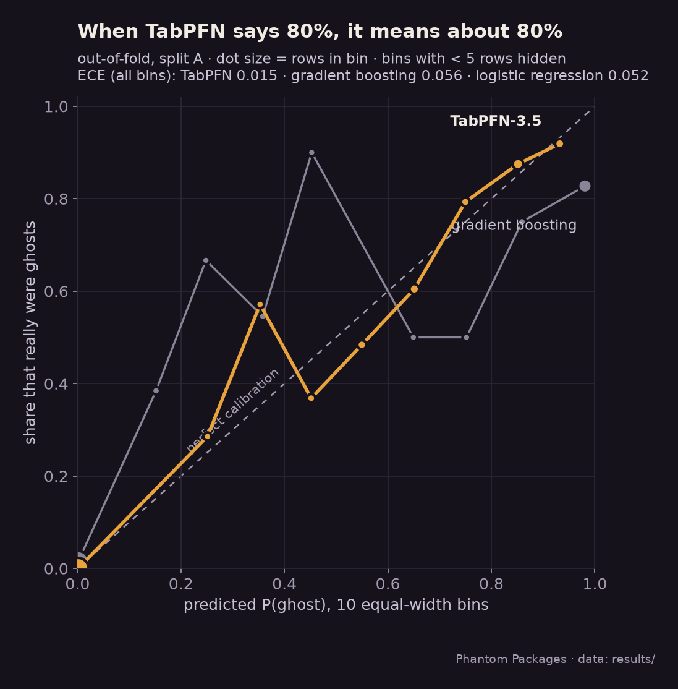
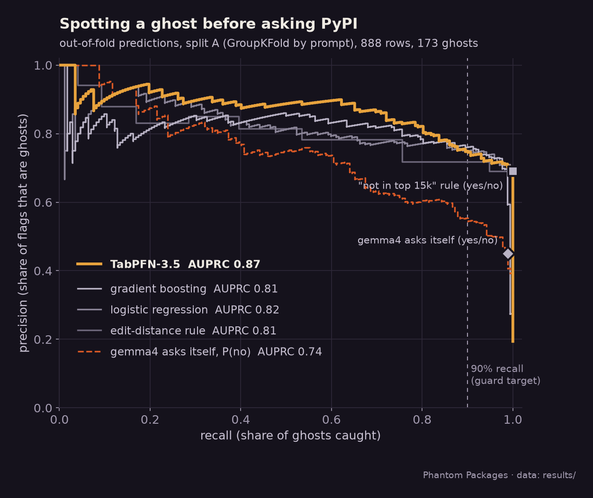
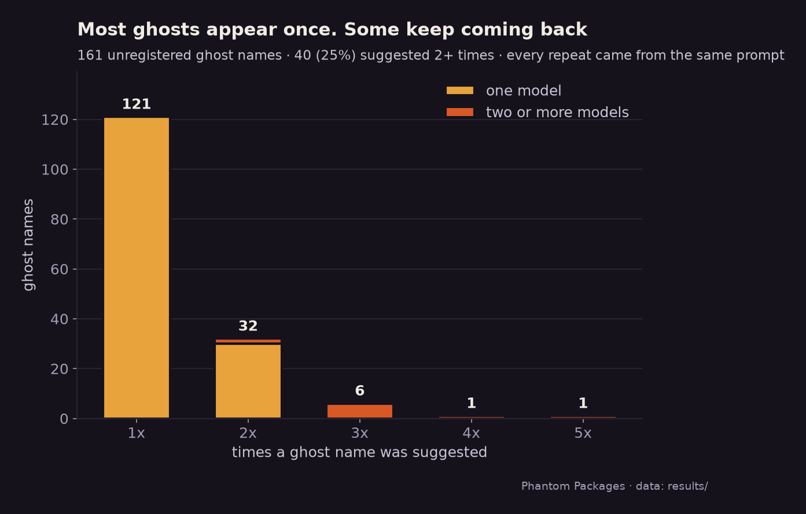
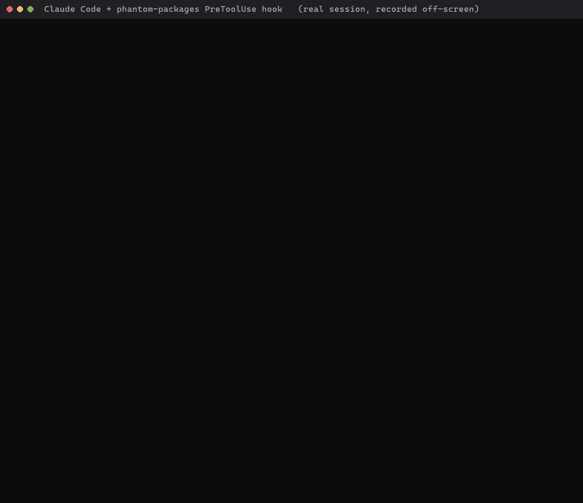
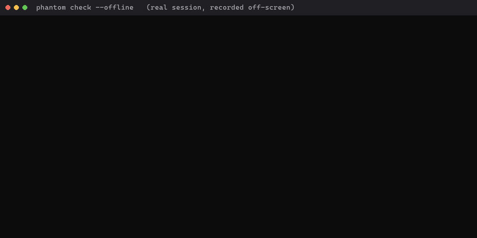

Three small models, 200 coding tasks
I asked three open-weight models, running locally through Ollama, to write short Python scripts that start with the exact pip install command they need. Every name was checked against PyPI with metadata requests only. Nothing was installed.

pip install json kind) are counted separately, not as ghosts.| Model | Ghosts | Install suggestions | Ghost rate | 95% CI | Replies with ≥1 ghost |
|---|

Can you see a ghost before PyPI does?
A TabPFN-3.5 model looks only at things known when the name was generated (how close it is to a real package, whether the model repeats it, how niche the task was) and never at registry data. I compared it with five baselines on identical folds.
| Method | AUROC (95% CI) | AUPRC | Precision @ 90% recall | Brier | ECE |
|---|
Where TabPFN wins and where it loses


Every stone is a package a model told me to install
Names of unregistered ghosts are hidden so nobody can claim them. Each stone shows an anonymised id (a keyed hash: without the secret key, a guessed name can't be checked against it), the kind of task that summoned it, and how many times it was suggested. On Día de los Muertos, marigolds guide the remembered home. These names are better left unremembered.

Stop the install before it happens
A Claude Code PreToolUse hook reads every shell command the agent wants to run. If it installs a name that doesn't exist on PyPI, the hook blocks it and tells the agent why.

# install (uv)
git clone https://github.com/T-RexBytes/phantom-packages
cd phantom-packages && uv sync --extra model
# check names, requirements files or pyproject.toml
uv run phantom check requests requirements.txt
uv run phantom scan-cmd "pip install requests"
uv run phantom check --offline requests # no network: TabPFN estimate only
The guard model is TabPFN-3.5-fast on name features only.
How this was done
- Nothing a model suggested was installed or downloaded, not even during the study. Lookups were metadata-only (PyPI JSON and pypistats), cached and rate-limited.
- No names were registered. Unregistered names the models repeat are withheld from every public file; a CI test fails if one leaks.
- Models propose, code decides. TabPFN gives a probability; the verdict comes from deterministic rules over registry facts. No LLM writes a reason.
- Splits: GroupKFold by prompt, leave-one-model-out and unseen names, the same folds for every method.
- Every number on this page is read from
results/summary.jsonin the repository.